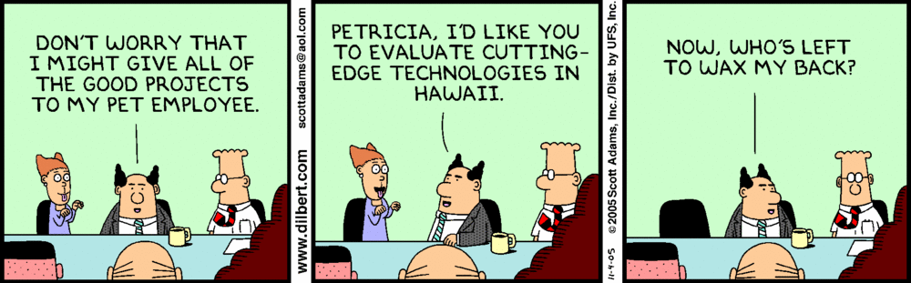
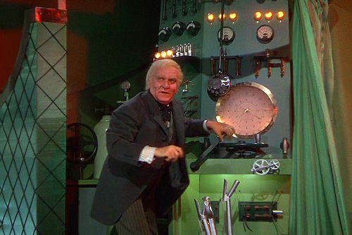

Angular Filters
Ng-Conf January 2013
Sharon DiOrio • [@sharondio]Time to evaluate JS Frameworks!*
* I was not sent to Hawaii to evaluate AngularJS
** My boss wanted me to say that he does not have a hairy back.
Reasons most people pick technologies/frameworks
- How much does it cost?
- Does it fit into our current infrastructure?
- Are developers trained in it?
- Is it stable?
- Is it Microsoft/Google/Java?
Reasons I pick technologies/frameworks
- Quick Results
- Impress your boss
- Impress other geeks
- Resume fodder
- Fun/Feel like a genius
My first app
clicky-clickyFilters seemed like Magic

The Code
How the Magic works
String Filter
angular.module('phonecatFilters', [])
.filter('checkmark', function() {
return function(input) {
return input ? '\u2713' : '\u2718';
};
});
(All it does is return a function that returns the updated string.)
(I still wish someone had told me that in the beginning.)
Filter: Filter (Array forEach Filter)
clicky-clickyCustom Filter
Testing Filters
Chaining Filters
Performance of Filters
Don't Use Filters When...
- DOM Manipulation (use directives!)
- Very complex data transformations (server-side or use a service)
- Unstable functions (no random functions)
- Restricting access to information